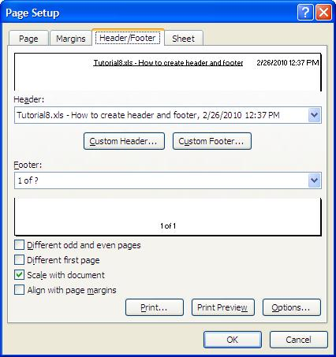

|
|
Header and footer
|
Concept
library allows you to set the header or the footer for an Excel sheet.
The header and the footer are located on the top and bottom margin of each sheet in an Excel file. The header and the
footer are split in three sections: left, center and right.
You can easily add and remove headers and footers sections to/from a sheet. Moreover, you can attach header and footer
properties such as: position (left, center and right side), font, predefined text (page number, total number of pages,
date and time, file name).
Concept in action
The below example shows how to export an Excel file with the header for center section containing the file name and a
custom text, header for right section containing the date and time and footer for center section containing the page
number and total number of pages.
|
Source code sample
|
|
|
|
|
|
|
// Create an instance of the class that exports Excel files, having two sheets
ExcelDocument workbook = new ExcelDocument(2);
...
// Get the first sheet
ExcelWorksheet xlsFirstTab = (ExcelWorksheet)workbook.easy_getSheetAt(0);
// Add header on center section
xlsFirstTab.easy_getHeaderAt(Header.POSITION_CENTER).InsertSingleUnderline();
xlsFirstTab.easy_getHeaderAt(Header.POSITION_CENTER).InsertFile();
xlsFirstTab.easy_getHeaderAt(Header.POSITION_CENTER).InsertValue(
" - How to create header and footer");
// Add header on right section
xlsFirstTab.easy_getHeaderAt(Header.POSITION_RIGHT).InsertDate();
xlsFirstTab.easy_getHeaderAt(Header.POSITION_RIGHT).InsertValue(" ");
xlsFirstTab.easy_getHeaderAt(Header.POSITION_RIGHT).InsertTime();
// Add footer on center section
xlsFirstTab.easy_getFooterAt(Footer.POSITION_CENTER).InsertPage();
xlsFirstTab.easy_getFooterAt(Footer.POSITION_CENTER).InsertValue(" of ");
xlsFirstTab.easy_getFooterAt(Footer.POSITION_CENTER).InsertPages();
// Export Excel file
workbook.easy_WriteXLSFile("C:\\Samples\\Excel header and footer.xls");
|
|
Click here to see Continuous Code Listing
|
|
' Create an instance of the class that exports Excel files, having two sheets
Dim workbook As New ExcelDocument(2)
...
' Get the first sheet
Dim xlsFirstTab As ExcelWorksheet = workbook.easy_getSheetAt(0)
' Add header on center section
xlsFirstTab.easy_getHeaderAt(Header.POSITION_CENTER).InsertSingleUnderline()
xlsFirstTab.easy_getHeaderAt(Header.POSITION_CENTER).InsertFile()
xlsFirstTab.easy_getHeaderAt(Header.POSITION_CENTER).InsertValue( _
" - How to create header and footer")
' Add header on right section
xlsFirstTab.easy_getHeaderAt(Header.POSITION_RIGHT).InsertDate()
xlsFirstTab.easy_getHeaderAt(Header.POSITION_RIGHT).InsertValue(" ")
xlsFirstTab.easy_getHeaderAt(Header.POSITION_RIGHT).InsertTime()
' Add footer on center section
xlsFirstTab.easy_getFooterAt(Footer.POSITION_CENTER).InsertPage()
xlsFirstTab.easy_getFooterAt(Footer.POSITION_CENTER).InsertValue(" of ")
xlsFirstTab.easy_getFooterAt(Footer.POSITION_CENTER).InsertPages()
' Export Excel file
workbook.easy_WriteXLSFile("C:\Samples\Excel header and footer.xls")
|
|
Click here to see Continuous Code Listing
|
|
// Create an instance of the class that exports Excel files, having two sheets
ExcelDocument *workbook = new ExcelDocument(2);
...
// Get the first sheet
ExcelWorksheet *xlsFirstTab =
__try_cast<ExcelWorksheet*>(workbook->easy_getSheetAt(0));
// Add header on center section
xlsFirstTab->easy_getHeaderAt(Header::POSITION_CENTER)->InsertSingleUnderline();
xlsFirstTab->easy_getHeaderAt(Header::POSITION_CENTER)->InsertFile();
xlsFirstTab->easy_getHeaderAt(Header::POSITION_CENTER)->InsertValue(
" - How to create header and footer");
// Add header on right section
xlsFirstTab->easy_getHeaderAt(Header::POSITION_RIGHT)->InsertDate();
xlsFirstTab->easy_getHeaderAt(Header::POSITION_RIGHT)->InsertValue(" ");
xlsFirstTab->easy_getHeaderAt(Header::POSITION_RIGHT)->InsertTime();
// Add footer on center section
xlsFirstTab->easy_getFooterAt(Footer::POSITION_CENTER)->InsertPage();
xlsFirstTab->easy_getFooterAt(Footer::POSITION_CENTER)->InsertValue(" of ");
xlsFirstTab->easy_getFooterAt(Footer::POSITION_CENTER)->InsertPages();
// Export Excel file
workbook->easy_WriteXLSFile("C:\\Samples\\Excel header and footer.xls");
|
|
Click here to see Continuous Code Listing
|
|
// Create an instance of the class that exports Excel files, having two sheets
ExcelDocument workbook = new ExcelDocument(2);
...
// Get the first sheet
ExcelWorksheet xlsFirstTab = (ExcelWorksheet)workbook.easy_getSheetAt(0);
// Add header on center section
xlsFirstTab.easy_getHeaderAt(Header.POSITION_CENTER).InsertSingleUnderline();
xlsFirstTab.easy_getHeaderAt(Header.POSITION_CENTER).InsertFile();
xlsFirstTab.easy_getHeaderAt(Header.POSITION_CENTER).InsertValue(
" - How to create header and footer");
// Add header on right section
xlsFirstTab.easy_getHeaderAt(Header.POSITION_RIGHT).InsertDate();
xlsFirstTab.easy_getHeaderAt(Header.POSITION_RIGHT).InsertValue(" ");
xlsFirstTab.easy_getHeaderAt(Header.POSITION_RIGHT).InsertTime();
// Add footer on center section
xlsFirstTab.easy_getFooterAt(Footer.POSITION_CENTER).InsertPage();
xlsFirstTab.easy_getFooterAt(Footer.POSITION_CENTER).InsertValue(" of ");
xlsFirstTab.easy_getFooterAt(Footer.POSITION_CENTER).InsertPages();
// Export Excel file
workbook.easy_WriteXLSFile("C:\\Samples\\Excel header and footer.xls");
|
|
Click here to see Continuous Code Listing
|
|
// Create an instance of the class that exports Excel files, having two sheets
ExcelDocument workbook = new ExcelDocument(2);
...
// Get the first sheet
ExcelWorksheet xlsFirstTab = (ExcelWorksheet)workbook.easy_getSheetAt(0);
// Add header on center section
xlsFirstTab.easy_getHeaderAt(Header.POSITION_CENTER).InsertSingleUnderline();
xlsFirstTab.easy_getHeaderAt(Header.POSITION_CENTER).InsertFile();
xlsFirstTab.easy_getHeaderAt(Header.POSITION_CENTER).InsertValue(
" - How to create header and footer");
// Add header on right section
xlsFirstTab.easy_getHeaderAt(Header.POSITION_RIGHT).InsertDate();
xlsFirstTab.easy_getHeaderAt(Header.POSITION_RIGHT).InsertValue(" ");
xlsFirstTab.easy_getHeaderAt(Header.POSITION_RIGHT).InsertTime();
// Add footer on center section
xlsFirstTab.easy_getFooterAt(Footer.POSITION_CENTER).InsertPage();
xlsFirstTab.easy_getFooterAt(Footer.POSITION_CENTER).InsertValue(" of ");
xlsFirstTab.easy_getFooterAt(Footer.POSITION_CENTER).InsertPages();
// Export Excel file
workbook.easy_WriteXLSFile("C:\\Samples\\Excel header and footer.xls");
|
|
Click here to see Continuous Code Listing
|
|
// Create an instance of the class that exports Excel files
$workbook = new COM("EasyXLS.ExcelDocument");
...
// Get the first sheet
$xlsFirstTab = $workbook->easy_getSheetAt(0);
// Add header on center section
$xlsFirstTab->easy_getHeaderAt_2($HEADER_POSITION_CENTER)->InsertSingleUnderline();
$xlsFirstTab->easy_getHeaderAt_2($HEADER_POSITION_CENTER)->InsertFile();
$xlsFirstTab->easy_getHeaderAt_2($HEADER_POSITION_CENTER)->InsertValue(
" - How to create header and footer");
// Add header on right section
$xlsFirstTab->easy_getHeaderAt_2($HEADER_POSITION_RIGHT)->InsertDate();
$xlsFirstTab->easy_getHeaderAt_2($HEADER_POSITION_RIGHT)->InsertValue(" ");
$xlsFirstTab->easy_getHeaderAt_2($HEADER_POSITION_RIGHT)->InsertTime();
// Add footer on center section
$xlsFirstTab->easy_getFooterAt_2($FOOTER_POSITION_CENTER)->InsertPage();
$xlsFirstTab->easy_getFooterAt_2($FOOTER_POSITION_CENTER)->InsertValue(" of ");
$xlsFirstTab->easy_getFooterAt_2($FOOTER_POSITION_CENTER)->InsertPages();
// Export Excel file
$workbook->easy_WriteXLSFile("C:\Samples\Excel header and footer.xls");
|
|
Click here to see Continuous Code Listing
|
|
' Create an instance of the class that exports Excel files
set workbook = Server.CreateObject("EasyXLS.ExcelDocument")
...
' Get the first sheet
set xlsFirstTab = workbook.easy_getSheetAt(0)
' Add header on center section
xlsFirstTab.easy_getHeaderAt_2(HEADER_POSITION_CENTER).InsertSingleUnderline()
xlsFirstTab.easy_getHeaderAt_2(HEADER_POSITION_CENTER).InsertFile()
xlsFirstTab.easy_getHeaderAt_2(HEADER_POSITION_CENTER).InsertValue( _
" - How to create header and footer")
' Add header on right section
xlsFirstTab.easy_getHeaderAt_2(HEADER_POSITION_RIGHT).InsertDate()
xlsFirstTab.easy_getHeaderAt_2(HEADER_POSITION_RIGHT).InsertValue(" ")
xlsFirstTab.easy_getHeaderAt_2(HEADER_POSITION_RIGHT).InsertTime()
' Add footer on center section
xlsFirstTab.easy_getFooterAt_2(FOOTER_POSITION_CENTER).InsertPage()
xlsFirstTab.easy_getFooterAt_2(FOOTER_POSITION_CENTER).InsertValue(" of ")
xlsFirstTab.easy_getFooterAt_2(FOOTER_POSITION_CENTER).InsertPages()
' Export Excel file
workbook.easy_WriteXLSFile ("C:\Samples\Excel header and footer.xls")
|
|
Click here to see Continuous Code Listing
|
|
// Create an instance of the class that exports Excel files
EasyXLS::IExcelDocumentPtr workbook;
hr = CoCreateInstance(__uuidof(EasyXLS::ExcelDocument),
NULL,
CLSCTX_ALL,
__uuidof(EasyXLS::IExcelDocument),
(void**) &workbook) ;
...
// Get the first sheet
EasyXLS::IExcelWorksheetPtr xlsFirstTab =
(EasyXLS::IExcelWorksheetPtr)workbook->easy_getSheetAt(0);
// Add header on center section
xlsFirstTab->easy_getHeaderAt_2(HEADER_POSITION_CENTER)->InsertSingleUnderline();
xlsFirstTab->easy_getHeaderAt_2(HEADER_POSITION_CENTER)->InsertFile();
xlsFirstTab->easy_getHeaderAt_2(HEADER_POSITION_CENTER)->InsertValue(
" - How to create header and footer");
// Add header on right section
xlsFirstTab->easy_getHeaderAt_2(HEADER_POSITION_RIGHT)->InsertDate();
xlsFirstTab->easy_getHeaderAt_2(HEADER_POSITION_RIGHT)->InsertValue(" ");
xlsFirstTab->easy_getHeaderAt_2(HEADER_POSITION_RIGHT)->InsertTime();
// Add footer on center section
xlsFirstTab->easy_getFooterAt_2(FOOTER_POSITION_CENTER)->InsertPage();
xlsFirstTab->easy_getFooterAt_2(FOOTER_POSITION_CENTER)->InsertValue(" of ");
xlsFirstTab->easy_getFooterAt_2(FOOTER_POSITION_CENTER)->InsertPages();
// Export Excel file
workbook->easy_WriteXLSFile("C:\\Samples\\Excel header and footer.xls");
|
|
Click here to see Continuous Code Listing
|
|
' Create an instance of the class that exports Excel files
Set workbook = CreateObject("EasyXLS.ExcelDocument")
...
' Get the first sheet
Set xlsFirstTab = workbook.easy_getSheetAt(0)
' Add header on center section
xlsFirstTab.easy_getHeaderAt_2(Header.HEADER_POSITION_CENTER).InsertSingleUnderline
xlsFirstTab.easy_getHeaderAt_2(Header.HEADER_POSITION_CENTER).InsertFile
xlsFirstTab.easy_getHeaderAt_2(Header.HEADER_POSITION_CENTER).InsertValue( _
" - How to create header and footer")
' Add header on right section
xlsFirstTab.easy_getHeaderAt_2(Header.HEADER_POSITION_RIGHT).InsertDate
xlsFirstTab.easy_getHeaderAt_2(Header.HEADER_POSITION_RIGHT).InsertValue(" ")
xlsFirstTab.easy_getHeaderAt_2(Header.HEADER_POSITION_RIGHT).InsertTime
' Add footer on center section
xlsFirstTab.easy_getFooterAt_2(Footer.FOOTER_POSITION_CENTER).InsertPage
xlsFirstTab.easy_getFooterAt_2(Footer.FOOTER_POSITION_CENTER).InsertValue(" of ")
xlsFirstTab.easy_getFooterAt_2(Footer.FOOTER_POSITION_CENTER).InsertPages
' Export Excel file
workbook.easy_WriteXLSFile ("C:\Samples\Excel header and footer.xls")
|
|
Click here to see Continuous Code Listing
|
|
' Create an instance of the class that exports Excel files
Set workbook = CreateObject("EasyXLS.ExcelDocument")
...
' Get the first sheet
Set xlsFirstTab = workbook.easy_getSheetAt(0)
' Add header on center section
xlsFirstTab.easy_getHeaderAt_2(HEADER_POSITION_CENTER).InsertSingleUnderline()
xlsFirstTab.easy_getHeaderAt_2(HEADER_POSITION_CENTER).InsertFile()
xlsFirstTab.easy_getHeaderAt_2(HEADER_POSITION_CENTER).InsertValue( _
" - How to create header and footer")
' Add header on right section
xlsFirstTab.easy_getHeaderAt_2(HEADER_POSITION_RIGHT).InsertDate()
xlsFirstTab.easy_getHeaderAt_2(HEADER_POSITION_RIGHT).InsertValue(" ")
xlsFirstTab.easy_getHeaderAt_2(HEADER_POSITION_RIGHT).InsertTime()
' Add footer on center section
xlsFirstTab.easy_getFooterAt_2(FOOTER_POSITION_CENTER).InsertPage()
xlsFirstTab.easy_getFooterAt_2(FOOTER_POSITION_CENTER).InsertValue(" of ")
xlsFirstTab.easy_getFooterAt_2(FOOTER_POSITION_CENTER).InsertPages()
' Export Excel file
workbook.easy_WriteXLSFile ("C:\Samples\Excel header and footer.xls")
|
|
Click here to see Continuous Code Listing
|
|
<!-- Create an instance of the class that exports Excel files -->
<cfobject type="java" class="EasyXLS.ExcelDocument" name="workbook" action="CREATE">
...
<!-- Get the first sheet -->
<cfset xlsFirstTab = workbook.easy_getSheetAt(0)>
<!-- Add header on center section -->
<cfset xlsFirstTab.easy_getHeaderAt(Header.POSITION_CENTER).InsertSingleUnderline()>
<cfset xlsFirstTab.easy_getHeaderAt(Header.POSITION_CENTER).InsertFile()>
<cfset xlsFirstTab.easy_getHeaderAt(Header.POSITION_CENTER).InsertValue(
" - How to create header and footer")>
<!-- Add header on right section -->
<cfset xlsFirstTab.easy_getHeaderAt(Header.POSITION_CENTER).InsertDate()>
<cfset xlsFirstTab.easy_getHeaderAt(Header.POSITION_CENTER).InsertValue(" ")>
<cfset xlsFirstTab.easy_getHeaderAt(Header.POSITION_CENTER).InsertTime()>
<!-- Add footer on center section -->
<cfset xlsFirstTab.easy_getFooterAt(Footer.POSITION_CENTER).InsertPage()>
<cfset xlsFirstTab.easy_getFooterAt(Footer.POSITION_CENTER).InsertValue(" of ")>
<cfset xlsFirstTab.easy_getFooterAt(Footer.POSITION_CENTER).InsertPages()>
<!-- Export Excel file -->
<cfset ret = workbook.easy_WriteXLSFile("C:\Samples\Excel header and footer.xls")>
|
|
Click here to see Continuous Code Listing
|
|
|
|
|
The screen shot below represents the headers and the footer of a sheet. The first header is centered and single
underlined, while the second header is on right side and has date and time format. The footer is centered and indicates
the page number and total number of pages.

|
Formatting header and footer
EasyXLS allows formatting the header and footer text by setting the font name, font size, bold, italic, single underline,
double underline, strikethrough, superscript and subscript format.
The header and footer is composed by a string that includes the text elements and formatting elements. The following
header expression represents a string that includes the file name ( &F) and "How to create header and footer"
string and the entire text is underlined ( &U):
&U&F - How to create header and footer
The header expression can be set using ExcelHeader.setHeaderString
method.
The footer expression can be set using ExcelFooter.setFooterString
method.
The header or footer expression can also be composed by using specific formatting methods that insert the corresponding
formatting element or specific texts to the header expression or footer expression:
-
Text element
The text element can be inserted into the header by using ExcelHeader.InsertValue
method or by appending the text element to the header expression.
The text element can be inserted into the footer by using ExcelFooter.InsertValue
method or by appending the text element to the footer expression.
-
Font name
The font name can be set into the header by using ExcelHeader.InsertFont
method or by appending the following string to the header expression:
"&" + (char)0x22 + "FontName" + (char)0x22
The font name can be set into the footer by using ExcelFooter.InsertFont
method or by appending the following string to the footer expression:
"&" + (char)0x22 + "FontName" + (char)0x22
-
Font size
The font size can be set into the header by using ExcelHeader.InsertFontSize
method or by appending &FontSize to the header expression.
The font size can be set into the footer by using ExcelFooter.InsertFontSize
method or by appending &FontSize to the footer expression.
-
Bold font
The bold attribute can be set to the font into the header by using ExcelHeader.InsertBold
method or by appending &B to the header expression.
The bold attribute can be set to the font into the footer by using ExcelFooter.InsertBold
method or by appending &B to the footer expression.
-
Italic font
The italic attribute can be set to the font into the header by using ExcelHeader.InsertItalic
method or by appending &I to the header expression.
The italic attribute can be set to the font into the footer by using ExcelFooter.InsertItalic
method or by appending &I to the footer expression.
-
Underlined font
The underline attribute can be set to the font into the header by using ExcelHeader.InsertSingleUnderline
method or by appending &U to the header expression.
The underline attribute can be set to the font into the footer by using ExcelFooter.InsertSingleUnderline
method or by appending &U to the footer expression.
-
Double underlined font
The double underline attribute can be set to the font into the header by using ExcelHeader.InsertDoubleUnderline
method or by appending &E to the header expression.
The double underline attribute can be set to the font into the footer by using ExcelFooter.InsertDoubleUnderline
method or by appending &E to the footer expression.
-
Strikethrough font
The strikethrough attribute can be set to the font into the header by using ExcelHeader.InsertStrikethrough
method or by appending &S to the header expression.
The strikethrough attribute can be set to the font into the footer by using ExcelFooter.InsertStrikethrough
method or by appending &S to the footer expression.
-
Superscript font
The superscript attribute can be set to the font into the header by using ExcelHeader.InsertSubscript
method or by appending &X to the header expression.
The superscript attribute can be set to the font into the footer by using ExcelFooter.InsertSubscript
method or by appending &X to the footer expression.
-
Subscript font
The subscript attribute can be set to the font into the header by using ExcelHeader.InsertSuperscript
method or by appending &Y to the header expression.
The subscript attribute can be set to the font into the footer by using ExcelFooter.InsertSuperscript
method or by appending &Y to the footer expression.
|
Page number and number of pages
The page number can be inserted into the header by using ExcelHeader.InsertPage
method or by appending &P to the header expression.
The page number can be inserted into the footer by using ExcelFooter.InsertPage
method or by appending &P to the footer expression.
The total number of pages of the Excel file can be inserted into the header by using ExcelHeader.InsertPages
method or by appending &N to the header expression.
The total number of pages of the Excel file can be inserted into the footer by using ExcelFooter.InsertPages
method or by appending &N to the footer expression.
|
Date and time
The date can be inserted into the header by using ExcelHeader.InsertDate
method or by appending &D to the header expression.
The date can be inserted into the footer by using ExcelFooter.InsertDate
method or by appending &D to the footer expression.
The time can be inserted into the header by using ExcelHeader.InsertTime
method or by appending &T to the header expression.
The time can be inserted into the footer by using ExcelFooter.InsertTime
method or by appending &T to the footer expression.
|
File name
The file name can be inserted into the header by using ExcelHeader.InsertFile
method or by appending &F to the header expression.
The file name can be inserted into the footer by using ExcelFooter.InsertFile
method or by appending &F to the footer expression.
|
Enter and Tab special characters
The Enter character can be inserted into the header by using ExcelHeader.InsertEnter
method or by appending 0x0A char to the header expression.
The Enter character can be inserted into the footer by using ExcelFooter.InsertEnter
method or by appending 0x0A char to the footer expression.
The Tab character can be inserted into the header by using ExcelHeader.InsertTab
method or by appending &A to the header expression.
The Tab character can be inserted into the footer by using ExcelFooter.InsertTab
method or by appending &A to the footer expression.
|
Page setup options
EasyXLS allows setting how the page appears when the Excel file is printed.
|
|
|
|
|
|
Available for: Professional, Excel Writer, Excel Reader
|